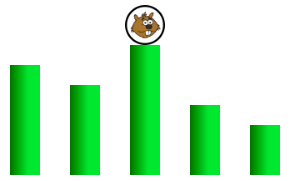

القفزات
يحاول القندس القفز على أكبر عدد ممكن من الأعمدة الخضراء.
يمكن للقندس القفز فقط على عمود أقصر من مستوى مكان وجوده.
قم بإعادة ترتيب الأعمدة لمنع القندس من القفز أكثر من مرتين ثلاثة مرات.
يحاول القندس القفز على أكبر عدد ممكن من الأعمدة الخضراء.
يمكن للقندس القفز فقط على عمود أقصر من مستوى مكان وجوده.
قم بإعادة ترتيب الأعمدة لمنع القندس من القفز أكثر من مرتين ثلاثة مرات.
عليك أن تضع الأعمدة حيث يترك القندس في الوسط.
نبدأ بوضع الأعمدة حيث يترك القندس في الوسط. القندس يقتصر بالتالي على القفز ثلاث قفزات.

ثم، نقوم بإعادة تنظيم الـ 3 أعمدة على اليسار، و الـ 3 أعمدة على اليمين.
ثم على الجانب الأيسر، نضع أكبر عمود في منتصف الاثنين الأخريين. وعلى اليمين نفعل الشيء نفسه.
القندس يقتصر فقط على قفزتين.

نبدأ بوضع الأعمدة حيث يترك القندس في الوسط.

ثم نعيد تنظيم 7 أعمدة على اليسار و 7 أعمدة على اليمين. حيث نضع في كل جزء أكبر عمود في المنتصف .

بعد ذلك ، نعيد تنظيم كل مجموعة من المجموعات الأربع المكونة من 3 أعمدة التي عزلناها. لكل منها نضع أكبر بامبو في المنتصف.

وبالتالي فإننا نقصر القندس على 3 قفزات فقط
توضح النسخة الصعبة من هذا الموضوع فكرة خوارزمية الـrecursion ، والتي تتمثل في تكرار نفس الإجراء على عدة مستويات. هنا، يتمثل الإجراء في وضع أكبر الأعمدة في الوسط ، قبل المتابعة بنفس الطريقة على اليسار وعلى اليمين. يتوافق هذان الجزءان مع المستوى التالي في حل المشكلة.